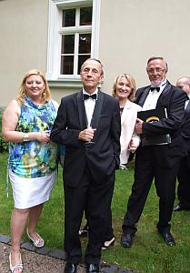

do aktualności
do aktualności2014-05-24
Spotykamy się w salce na ul. Kanoniczej, aby zrobić rozśpiewkę. Chór stawił się prawie w komplecie.
Teraz przechodzimy do kościoła. Trzeba zainstalować instrument, bo mamy dzisiaj koncert z akompaniamentem Małgorzaty Westrych.
Jest też już Małgosia i drużki. Są to ostatnie chwile przed wejściem gości i młodej pary.
Ustawiamy się i w skupieniu przygotowujemy do koncertu. Zaczynamy uroczyście od „Hallelujah” Georga Friedricha Händla. A na zakończenie „Ave Maria” w pięknym wykonaniu Izabeli Szoty.
Już po ceremonii. Młodzi wychodzą przy głośnych brawach.
Wychodzą też rodzice i goście.
My również opuszczamy kościół i udajemy się do auta (BUSA), ponieważ to nie koniec uroczystości …
cała Camerata jest zaproszona na przyjęcie weselne!!! Jedziemy.
Już jesteśmy na miejscu. Czekamy na przyjazd MŁODEJ PARY.

Rodzice i goście również czekają.
Już są!!!
Wchodzimy na piękną „białą salę”. Śpiewamy 100 lat i zajmujemy miejsca przy białych stolikach.
Już się wszyscy posilili, więc zaczynają się „pląsy”, ale jakie??? To para (nie od pary :) rodziców!!!
A to Camerata :)
I wszyscy razem „wężykiem”.
Chwila odpoczynku, bo nas jeszcze czeka praca, czyli koncert na życzenie rodziców.
Zbieramy się powolutku, Ewa szykuje nuty, bo ona nam teraz akompaniuje i …
zaczynamy koncert a właściwie „koncert życzeń”.
Warunki „bojowe”, ale chór musi być elastyczny :) więc damy z siebie wszystko. Mamy też posiłki z zewnątrz, czyli babcia panny młodej.
Natomiast druga babci tańczyła siedząc w fotelu „Serduszko puka” tak, że szkoda, iż tego nie widać na zdjęciach.
Śpiewali z nami wszyscy widzowie i oczywiście dołączyła do nas Małgosia, z której już opadł stres i mogła wesprzeć soprany (a właściwie to p. dyrygentka ją „łapnęła”).
Na życzenie gości zaśpiewaliśmy utwór „nieweselny”, czyli ... „Va pensiero” i znowu Małgosia Westrych musiała grać bez nut, ale co to dla niej :)
Na koniec zaśpiewał przyjaciel pp. młodych, któremu również akompaniowała Małgosia.
Koncert bardzo się podobał, brawa były wielkie.
do aktualności


 Prowadzenie strony: Małgorzata Wysocka-Cebula
Prowadzenie strony: Małgorzata Wysocka-Cebula